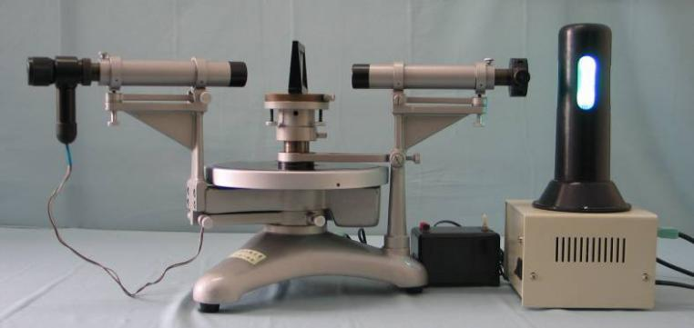
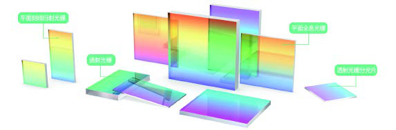
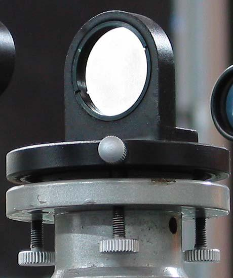
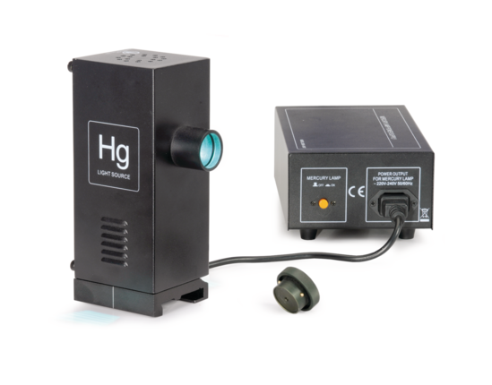
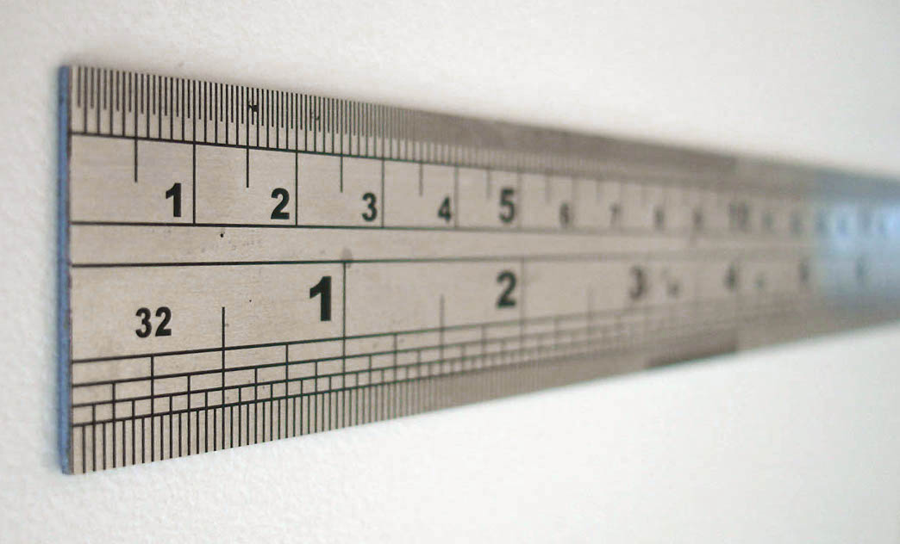

光学演示台
动手验证
蓝 435.8 绿 546.1 黄 577.0 / 579.0 nm

从左到右找出望远镜、圆形载物台和平行光管。右端灯罩的出光窗对准狭缝；本实验使用汞灯提供已知波长的谱线。
哈尔滨工程大学 · 分光计实验讲义，第 3 页
图中分别标出了平面全息光栅和透射光栅。课堂使用透射式全息光栅，装夹时拿边缘，并核对实物的光栅编号。
联合光科 · 产品选型手册，第 9 页
镜面竖立在台面中央。调节时通过望远镜观察镜面反射回来的十字像。
北京交通大学海滨学院 · 分光计实验讲义，第 8 页
左侧标有 Hg 的灯室提供线光谱，右侧是电源。实验中通过仪器光路观察谱线。
PASCO · SE-6608 汞光源实物图
沿垂直于刻线的方向测量有效受照宽度，记录数值及单位 mm。
Ejay · Wikimedia Commons · CC BY-SA 4.0先顺着光路找出中央像，再看相邻刻线为什么只在某些方向形成明亮谱线。
正入射时，相邻周期处的入射光同相。沿与法线夹角 φ 的方向，两束出射光的光程差为 d sin φ。当它等于整数个波长时，各周期的光同相叠加，形成第 k 级主极大。
d sin φ = kλ k = 0, ±1, ±2, …
d 是相邻刻线的中心间距，即光栅常数。在教材的理想透射狭缝模型中，透光宽度 a 与相邻不透光宽度 b 之和为一个周期，即 d = a + b。望远镜物镜把同一方向的平行光会聚在焦平面上，形成对应级次的谱线。若刻线密度为 g 条/mm，则 d = 1/g mm。例如 500 条/mm 对应 d = 0.002 mm = 2000 nm。只有 |kλ/d| ≤ 1 的级次满足方程。
以教材中的汞黄双线为例，先问仪器能否辨认出两条线，再问两条线的中心相隔多少角度。
R = λ / Δλmin = |k|N N ≈ L/d，k ≠ 0
L 与 d 取相同长度单位。R 表示理想光栅的理论分辨本领；入口狭缝像的宽度、调焦和光学像差都会影响实际观察。
D = dφ/dλ = k/(d cos φ)
λ 和光栅常数均用 nm 时，理论斜率单位为 rad/nm。实测角差若用度，乘 π/180 后再与理论值比较。仅在衍射角较小时，才有 cos φ ≈ 1。
两线平均波长约 578 nm，间隔 2.0 nm，刚好分开所需 R 约为 289。若 d = 2000 nm，在一级 φ ≈ 16.8°，|D| ≈ 0.000522 rad/nm，预计两线相隔约 0.060°。实际能否分清还要看谱线宽度。
将同一谱线在左右两侧分别对准叉丝，每侧读取两个游标。可填十进制度，或用空格分开度、分，例如“359 48”。空格留白表示尚未测量。
| 级次 | 谱线 / nm | 左 I | 左 II | 右 I | 右 II | φⅠ / ° | φⅡ / ° | 平均 φ / ° | d / nm |
|---|
正入射、同级左右对称。模拟练习和实测分别保存于当前浏览器。第一行零级只记录中央像的位置。
选择一行，分别求出两个游标的左右半夹角，取平均得到 φ，再求光栅常数 d。
横轴为波长，纵轴为衍射角。比较同一级的两个点，可用 Δφ / Δλ 估计这一波段的平均角色散率。
以有效行求 d̄。对每一级黄双线，以 Δφ/Δλ 求实验斜率（角度转弧度），以该级两黄线的平均角和 d̄ 求 k/(d̄ cos φ)。L 从 mm 换算为 nm 后再除以 d̄。
打开学生交来的作业文件，查看预习作答、原始读数和分析。批改文件可发回学生。